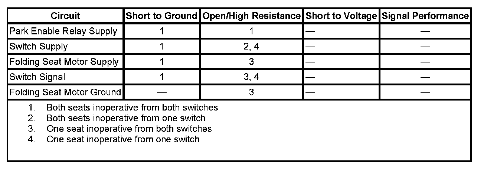

Power Folding Seat Inoperative (Rear)
POWER FOLDING SEAT INOPERATIVE (REAR)
DIAGNOSTIC FAULT INFORMATION

Perform the Diagnostic System Check - Vehicle prior to using this diagnostic procedure. Initial Inspection and Diagnostic Overview
CIRCUIT/SYSTEM DESCRIPTION
The power fold and tumble second row seats are operated from the power fold switches in the overhead console or the rear switches on the panels behind the rear doors. Voltage to the power fold switches is supplied through the park enable relay while in a de-energized state. The park enable relay is controlled by the body control module (BCM) through a high side drive control circuit and will be energized whenever the ignition is in the accessory, run, or crank positions and the transmission is not in park. The folding seat motors are supplied battery voltage from the REAR SEAT 20A fuse and grounded at the B pillars. When a folding seat switch is pressed battery voltage is applied the switch signal circuit causing the power fold motor to initiate the power fold cycle.
CIRCUIT/SYSTEM TESTING
Both Seats Inoperative from Both Switches
1. Disconnect the left instrument panel (I/P) junction block connector C2.
2. Verify that a test lamp illuminates when connected from the park enable relay supply circuit terminal E2 in the harness connector to ground.
- If the test lamp does not illuminate repair the park enable relay supply circuit for an open or short to ground. If the circuit tests normal and the EAP fuse #73 is open, test the switch supply and signal circuits for a short to ground.
3. Disconnect one of the folding seat motor connectors.
4. Verify that a test lamp illuminates when connected from the battery supply circuit terminal in the harness connector to ground.
- If the test lamp does not illuminate repair the battery supply circuit for an open or short to ground.
5. If the circuits test normal replace the left I/P junction block.
Both Seats Inoperative from One Switch
1. Disconnect the inoperative switch connector.
2. Verify that a test lamp illuminates when connected from the switch supply circuit terminal in the harness connector to ground.
- If the test lamp does not illuminate test the switch supply circuit for an open or high resistance. If the circuit tests normal replace the left I/P junction block.
3. If the circuits test normal replace the inoperative switch.
One Seat Inoperative from Both Switches
1. Disconnect the inoperative folding seat motor connector.
2. Verify that a test lamp illuminates when connected from battery voltage to the ground circuit terminal in the harness connector.
- If the test lamp does not illuminate repair the ground circuit for an open or high resistance.
3. Verify that a test lamp illuminates when connected from the battery supply circuit terminal in the harness connector to ground.
- If the test lamp does not illuminate repair the battery supply circuit for an open or high resistance.
4. Connect a test lamp from the switch signal circuit terminal in the harness connector to ground.
5. Verify that the test lamp illuminates when a power fold switch is pressed.
- If the test lamp does not illuminate repair the switch signal circuit for an open or high resistance.
6. If the circuits test normal replace the folding seat motor.
One Seat Inoperative from One Switch
1. Disconnect the inoperative switch connector.
2. Verify that a test lamp illuminates when connected from the switch supply circuit terminal in the harness connector to ground.
- If the test lamp does not illuminate repair the switch supply circuit for an open or high resistance.
3. Connect a fused jumper wire to the switch signal circuit terminal in the harness connector.
4. Verify that the seat power folds when the other end of the jumper wire is momentarily applied to battery voltage.
- If the seat does not power fold repair the switch signal circuit for an open or high resistance.
5. If the circuits test normal replace the power fold switch.
REPAIR INSTRUCTIONS
Perform the Diagnostic Repair Verification after completing the diagnostic procedure.
Instrument Panel Electrical Center or Junction Block Replacement - Left Side. Verification Tests